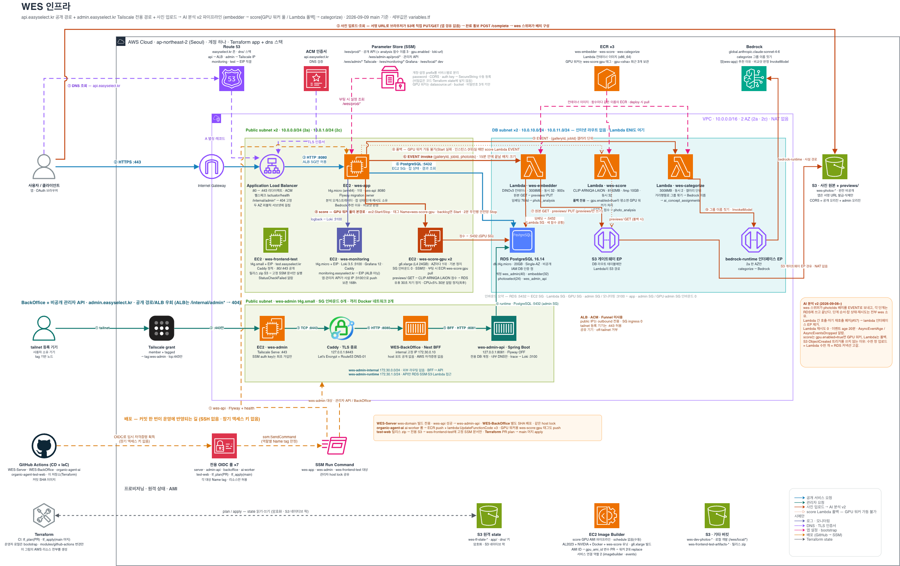

organic-agent-infra · Terraform · AWS ap-northeast-2
wes 인프라 — 무엇이 어디에, 왜 그렇게 놓였나
계정 하나, VPC 하나, EC2 다섯 종류(앱 · 관리자 · 모니터링 · 테스트 프론트 · GPU 워커 두 대), RDS 하나, Lambda 셋, S3 버킷 셋. 공개 API는 ALB → wes-app으로, 관리자 화면은 Tailscale → wes-admin으로, 사진 바이트는 브라우저 ↔ S3 직접으로 갑니다. Lambda와 RDS는 인터넷 경로가 없는 DB 서브넷에 있고, 배포는 GitHub Actions가 OIDC로 받은 임시 자격증명으로만 합니다. 이 사이트는 Terraform 코드(variables.tf 기본값 + 모듈)를 기준으로 각 구성 요소가 어떻게 셋팅되었고 무슨 역할인지 정리합니다.
사용자 · tailnet · 외부EC2 (wes 소유 서버)Lambda · 관리형 서비스GPU 워커S3 · RDS · 엔드포인트배포 · CI
공개 서비스 요청api → ALB → wes-appRoute 53 · ACM · :8080 · RDS
관리자 요청tailnet → wes-adminTailscale · Caddy · BackOffice · :8081
사진 · AI 분석S3 직접 → Lambda · GPUembedder · score · categorize · Bedrock
로그 · 모니터링logback → Loki → Grafanawes-monitoring · EIP 직결
배포 · 설정OIDC → SSM · ECR롤 7 · Run Command · Terraform state
구성도 원본 (draw.io)
인프라 저장소의 그림입니다. 클릭하면 원본 크기로 열립니다. 아래 클릭형 지도는 이 그림을 페이지 링크가 있는 박스로 다시 그린 것입니다.

서비스 아키텍처 · 클릭형
인바운드 매트릭스 ↗실선은 호출·쓰기, 점선은 읽기·관측·설정입니다. 박스를 누르면 해당 페이지로 갑니다. GPU → RDS, ADM → Loki 같은 일부 연결은 그림을 읽기 쉽게 생략했고 각 페이지의 도면에 있습니다.
RDS 인바운드는 wes-app · Lambda · GPU 워커 · wes-admin 네 SG뿐입니다. wes-app만 Lambda를 부르고 GPU를 켜고 끕니다. Lambda끼리는 부르지 않습니다.
경로 여섯 줄 요약
공개 API
api.easyselect.kr → ALB(:80→:443, ACM) → wes-app :8080(ALB SG만) → RDS :5432. ALB 규칙이 /internal/admin*을 404로 고정. 3.관리자tailnet 기기 →
admin.easyselect.kr(Tailscale IP) → Serve :443 → Caddy :8443(DNS-01) → BackOffice BFF → admin-api :8081. SG 인바운드 0, Docker 네트워크 둘. 6.사진 · AI서명 URL로 브라우저 ↔ S3 직접. wes-app이 50장 배치를 EVENT로 Lambda에 보내고 GPU 워커를 켜고 끔. 단계 전환은 wes가 DB를 보고 결정. 5.
로그wes-app · admin-api → logback → wes-monitoring 사설 IP :3100(Loki) →
monitoring.easyselect.kr(EIP 직결, ALB 아님) → Grafana. 보존 7일. 7.배포저장소 4개의 GitHub Actions → OIDC 롤 7 → SSM Run Command(태그
Name 한정) · ECR push + UpdateFunctionCode · 릴리스 zip S3. SSH·장기 키 없음. 7.설정 · state앱은 SSM
/wes/prod/*를 통째로 읽고 시크릿은 전부 수동 SecureString. Terraform state는 사전 생성 S3(app/ · dns/) + 네이티브 락. 7.인벤토리
| 이름 | 타입 | 위치 | 인바운드 | 역할 | 페이지 |
|---|---|---|---|---|---|
ALB wes | Application LB · ACM | public 2a · 2c | :80 :443 ← 인터넷 | TLS 종료 · 301 · 404 규칙 · 헬스 /actuator/health | 3 |
wes-app | t4g.micro (arm64) · gp3 20G | public 2a | :8080 ← ALB SG | wes-api · Flyway owner · 분석 오케스트레이터 · Bedrock 추천 · GPU Start/Stop | 3 |
wes-admin | t4g.small · gp3 20G | public 2a | SG 0 · tailnet :443만 | Tailscale · Caddy · BackOffice · wes-admin-api | 6 |
wes-monitoring | t4g.micro + EIP | public 2a | :80 :443 공개 · :3100 ← app·admin SG | Loki 3.5.3 · Grafana 12.1.1 · Caddy | 7 |
wes-frontend-test | t4g.small + EIP | public 2a | :80 :443 공개 | 정적 테스트 프론트 · 릴리스 zip 배포 | 7 |
wes-score-gpu ×2 | g6.xlarge · 기본 정지 · 고정 AMI | public 2a · 2c | SG 0 · SSM만 | score GPU 워커 · 유휴 30초 자기 정지 | 5 |
wes-db | RDS db.t4g.micro · PG 16.14 · 20G · Single-AZ · 백업 0 | DB subnet | :5432 ← ec2·embedder·gpu·admin SG | 계정 wes_admin(40) · embedder(32) · photoselect(24) · wes_admin_api | 4 |
wes-embedder / score / categorize | Lambda 컨테이너 x86_64 · 900s | DB subnet ×2 | 없음 | 3008 / 8192 / 3008 MB · 동시 32 / 32 / 2 · 재시도 0 | 5 |
wes-photos-* · wes-dev-photos-* · 테스트 아티팩트 | S3 | 리전 | 서명 URL · 롤 | 원본 + previews/ · 로컬 개발 · 릴리스 zip | 4 |
| VPC 엔드포인트 | S3 Gateway · bedrock-runtime Interface | DB 라우트 · 2a | :443 ← VPC CIDR | Lambda의 유일한 바깥길 | 2 |
| Image Builder | 수동 파이프라인 | public 2a | — | AL2023 + NVIDIA 580 + Docker → GPU AMI | 5 |
| OIDC 롤 ×7 | IAM | — | — | server ×2 · backoffice · ai · test-web · tf_plan · tf_apply | 7 |
설계 원칙
- 이미지 바이트는 서버를 지나지 않는다. 브라우저 ↔ S3 직접. 서버·Lambda는 서명 URL과 previews/ 몇 장만 다룬다.
- 단계 전환은 wes-app이 소유한다. Lambda 간 호출·자기 재호출·체인은 없고(#57), wes가 DB를 보고 다음 단계를 EVENT로 부른다. 그래서 lambda 엔드포인트도 사라졌다.
- 인터넷 경로 없는 DB 서브넷. NAT 없음. Lambda·RDS의 바깥은 S3 게이트웨이와 bedrock-runtime 엔드포인트뿐.
- 관리자 경로는 공개 경로와 겹치지 않는다. 별도 EC2, SG 인바운드 0, Tailscale 태그 grant, ALB 404 규칙, 앱과 분리된 SSM prefix.
- SSH·장기 키 없음. 모든 배포·접속은 OIDC 롤과 SSM(Run Command·세션)으로. SendCommand는 태그
Name또는 인스턴스 ID로 한정. - 시크릿은 Terraform 밖. state에 평문 없음(ephemeral·write-only). DB 비밀번호·JWT·OAuth·Tailscale 키는 수동 SecureString.
- GPU는 필요할 때만 켠다. 두 대 모두 기본 정지, 켜는 주체는 wes, 끄는 주체는 워커 자신 → wes 안전망 → CloudWatch 알람.
- 폐기 가능한 테스트 환경. Single-AZ · 백업 0 · 삭제 보호 없음 · 사진 버킷
force_destroy. 실제 고객 데이터를 받는 순간 뒤집어야 할 값들이다.
페이지 지도
2
네트워크 · 보안 그룹
VPC · 서브넷 넷 · 라우트 · 엔드포인트 · SG 여섯과 규칙 전수 · 인바운드 매트릭스 · DNS 스택 분리
3
공개 요청 경로
Route 53 · ACM · ALB 리스너·규칙·타깃 · wes-app EC2 · user_data · 인스턴스 롤 정책 · 부팅 시 SSM 값
4
데이터 저장소
RDS 설정 · 계정 넷과 커넥션 상한 · 비밀번호 처리 · S3 버킷 셋 · CORS · 키 구조와 prefix별 권한
5
AI 실행기
Lambda 셋 스펙 · IAM · 비동기 설정·알람 · ECR · GPU 워커 풀(롤·systemd·정지 4겹) · Image Builder · Bedrock
6
관리자 경로
Tailscale grant·Serve · wes-admin 호스트 · Caddy DNS-01 · Docker 네트워크 둘 · BackOffice · admin-api · SSM prefix
7
운영 · 배포
모니터링 · 테스트 프론트 · OIDC 롤 일곱 · 인프라 CI/CD · state · 배포 순서 · SSM prefix 다섯 · 알람 · 비용
정본 문서
- 인프라 코드:
organic-agent-infra/— 루트main.tf · variables.tf · admin.tf · frontend-test.tf, 모듈 12개modules/{network, security, ingress, compute, database, storage, analysis, score-gpu, admin-access, monitoring, frontend-test, github-actions}, DNS 스택dns/ - 인프라 문서:
README.md·docs/architecture.md(Mermaid 요약) ·docs/runbook.md·docs/deploy-order.md·docs/admin-internal-access.md·docs/pipeline-v2-infra-plan.md·docs/frontend-test.md - wes 쪽:
docs/architecture/prod-deployment.md·deploy-architecture.md·parameter-store-mapping.md· 파이프라인 동작 pipeline-v2-site · AI 세 도메인ai-domains-architecture.html - AI 쪽:
organic-agent-ai/최상위 디렉토리 하나 = Lambda 하나 ·score/deploy/gpu-worker/README.md